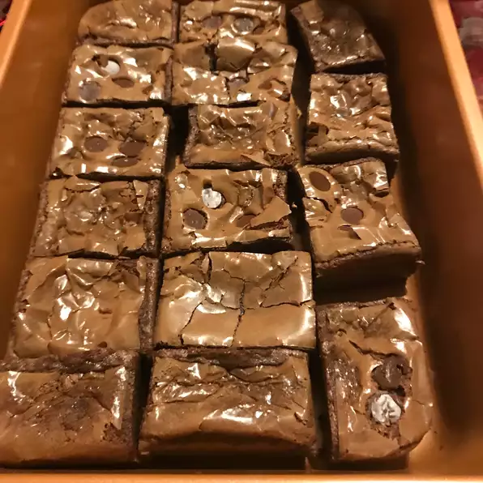

brownie

Description
Fudgy brownies that are the best you have ever tried. Fattening but worth it! Brownies can be frozen after baking.
Ingredients
- 1 ½ cups unsalted butter
- 3 cups white sugar
- 2 teaspoons vanilla extract
- 7 eggs, beaten
- 1 ¼ cups all-purpose flour
- 1 ¼ cups unsweetened cocoa powder
- 1 teaspoon salt
- 1 pound chopped walnuts
Steps
- Preheat oven to 350 degrees F (175 degrees C).
Line one 9x9-inch baking pan with foil and spray with cooking spray.
- In a saucepan over medium heat, melt the butter.
Stir in the sugar until dissolved. Remove mixture from heat.
Gradually pour the melted butter into the beaten eggs, whisking constantly, until mixture is fully incorporated.
Stir in the vanilla.
- Sift the flour, cocoa and salt together. Add the flour mixture to the butter mixture, mixing until combined.
Stir in the walnuts. Spread the batter into the prepared pan.
- Bake in preheated oven until brownies are set (a toothpick inserted in the center should have small crumbs clinging to it, rather than wet batter), 45 to 50 minutes.
Do not overbake!